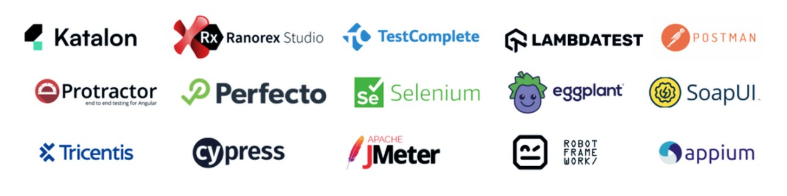

Jayaraju
Metta


About
Test Automation Architect
10+ Years of experience in the area of Software Testing with a solid understanding of Test Automation,
Pre-sales, Test estimations & ROI.
Skill In

Experience
ZenQ
Hyderabad, India
Jan 2019 - Sept 2023
Test Automation Architect
- complete ownership for preparing test automation solution, designing automation frameworks across web, api, mobile thick client apps and lead the implementation of test strategy, test plans & test execution of the product.
- Supports automation script development and the optimisation of those scripts.
- Develop automation strategy to support regression testing based on the technical analysis, complexity and reusability
- Setup CT pipeline with Azure devops, Docker
- Setup automation infra using Azure devops, Docker
- Lead a team of 30 automation engineers across different experience levels and across multiple projects.
Hexagon's Capability Center India
Hyderabad, India
July 2016 - Jan 2019
Senior Software Analyst
- Lead and mentor QA team members.
- Oversee all aspects of quality assurance including establishing metrics, applying best practices, and developing new tools and processes to ensure quality goals are met.
- Lead the QA strategy, test design /plan, test automation, and drive test execution for a key strategic service delivery transformation initiative.
- Lead and co-ordinate the Go-Live activities including the execution of the deployment Plans and checklists.
Capgemini
Hyderabad, India
May 2014 - July 2016
Senior Test Automation Engineer
- Identification of test cases for automation from existing test case documentation.
- Automation framework design and implementation according to project structure.
- Creating, Enhancing, Debugging and Running Test Cases.
- Organizing, monitoring defect management process Handling changes and conducting regression tests.
Spectrum Telesolutions Pvt. Ltd.
Hyderabad, India
July 2013 - April 2014
Graduate Engineer trainee
- Plan, design, and install telecommunication equipment and facilities
- Research communication system to identify any problem and come up with a solution
- Doing maintenance and updates if needed
Education
Jawaharlal Nehru Technological University
Kakinada, Andhra pradesh
Sept 2009 - May 2013
B.Tech
Electronics and Communications Engineering
Projects
Order & Inventory Management System
Role: Test Automation Architect
Skills:
- Selenium
- Java
- TestNG
- Maven
- Github
- Tosca
- Siklui
- winnum Driver
Responsibilities:
- Conduct test automation feasibility study & poc
- Design test automation frameworks from the scratch
- Develop, execute and maintain Automated test cases
- Design test automation strategies, test automation plan Documents
- Deliver proof of concepts to exhibit test automation capabilities
- Configure/setup required test automation infrastructure
- Participate in meetings with clients to understand requirements
Healthcare Analytics Management System
Role: Test Automation Architect
Skills:
- Cypress
- Javascript
- Bitbucket
- Mocha & Chai
Responsibilities:
- Developed automation framework using Cypress Javascript using mocha-chai.
- Managed Bitbucket repositories and permissions and branching
- Automated build and deployment process using Bitbucket pipeline
- Reviewed and documented Test Strategies and Test Plan Documents
- Automated and executed approved manual Test Cases
Vehicle Insurance Quote & Policy Management System
Role: Test Automation Architect
Skills:
- Selenium
- C#
- Azure DevOps
- NUnit
- SOAPUI
- Postman
- Specflow
- Testproject
- Docker
Responsibilities:
- Conduct test automation feasibility study & poc
- Design test automation frameworks from the scratch
- Develop, execute and maintain Automated test cases
- Design test automation strategies, test automation plan Documents
- Deliver proof of concepts to exhibit test automation capabilities
- Configure/setup required test automation infrastructure
- Participate in meetings with clients to understand requirements
Smart Grid: IoT Energy Management Systems
Role: Lead Test Automation
Skills:
- Selenium
- Python
- ROBOT
- pip
- Bitbucket
Responsibilities:
- Developed test automation framework using Selenium, Python with ROBOT
- Reviewed and documented the Test Strategies & est Plan Documents
- Designed Test Cases and automating and executing the Test Cases
Health Insurance policy & Claims Management System
Role: Senior Test Automation Engineer
Skills:
- CodedUI
- C#
- MSTest
- MSBuild
- Github
Responsibilities:
- Developed test automation framework using CodedUI, C# with MSTest.
- Reviewed and documented the Test Strategies & est Plan Documents
- Designed Test Cases and automating and executing the Test Cases
Life Insurance policy & Underwriting Management System
Role:Test Automation Engineer
Skills:
- HP QTP
- VBScript
- HP ALM
Responsibilities:
- Developed test automation framework using HP QTP with VBscript.
- Reviewed and documented the Test Strategies & est Plan Documents
- Designed Test Cases and automating and executing the Test Cases
Skills
- Selenium
- Cypress
- Core Java
- C#
- Javascript
- Python
- Docker
- RestAssured
- Postman
- Git
- Tricentis Tosca
- Siklui
- Winum Driver
Certifications